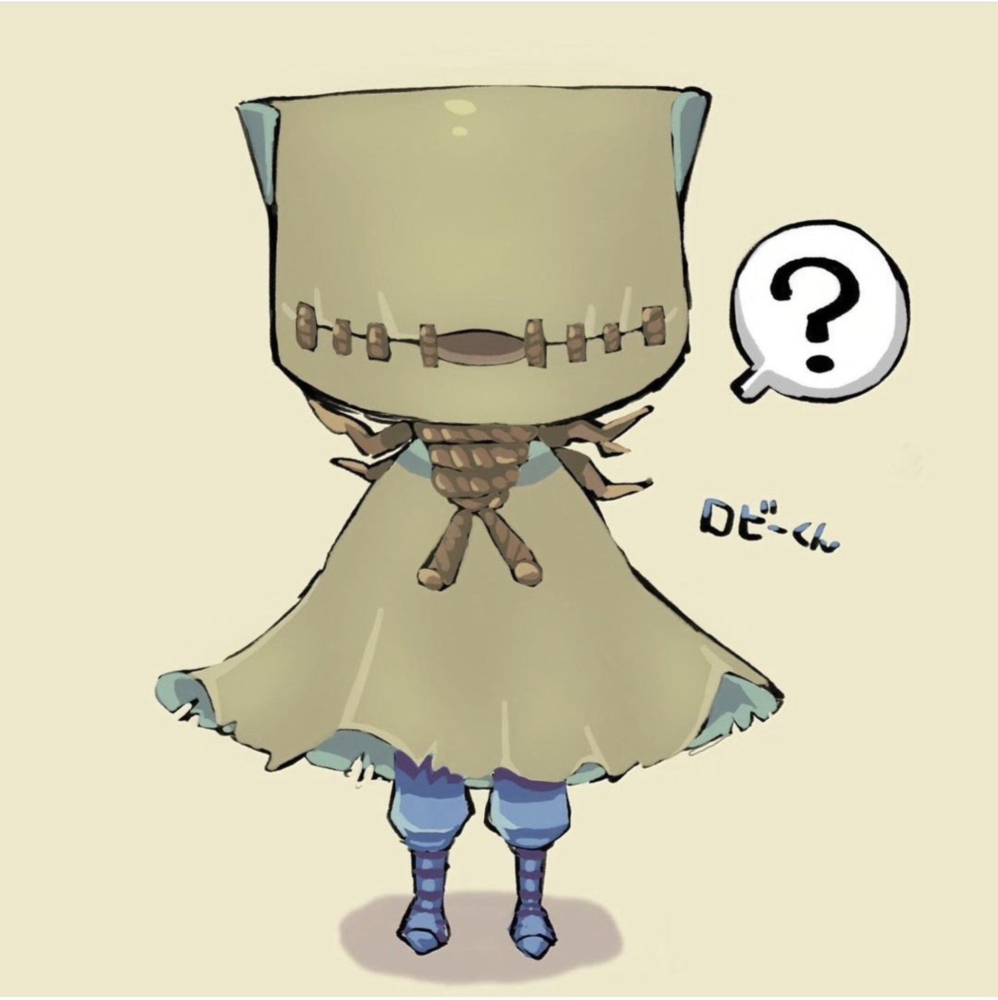
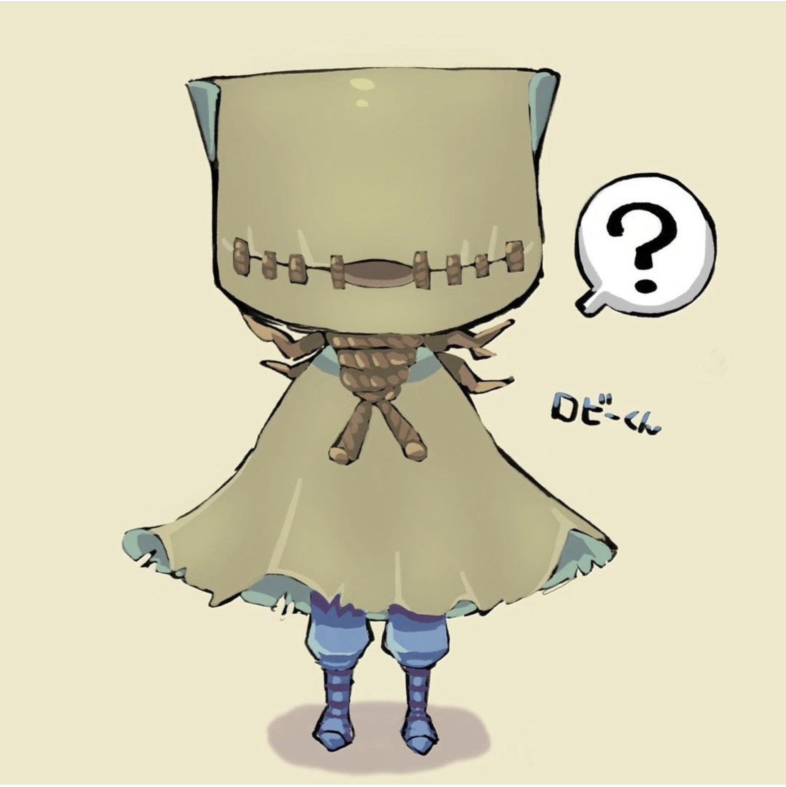

Hi Welcome to my page!🎉
i'm a Japanese freshman in high school🇯🇵
i'm learning html and drawing!
i wanted to try to make html and i will exhibit my works.

at first, i drew so cute paintings. i loved sweet color and sweet works because they made me so relax.


these are my psintings that i imaged each season.
Do you which is spring, summer, autumn or winter?
second, i loved colors that i can't make on the paper.
beautiful gradation colors too.


i think these my paintings have different atmosphere. which one do you like the best?
third, i loved identityV so much.
i don't play it almost for now but when i open it, still my friend welcome me.

 


i really loved Naib so much. actually i wanted to marry with him
four, i didn't paint illustlation because of study for the high school entramce exam.
instead, i draw a lots of still life.
i'm a student of design so i need to do still life too for the exam.